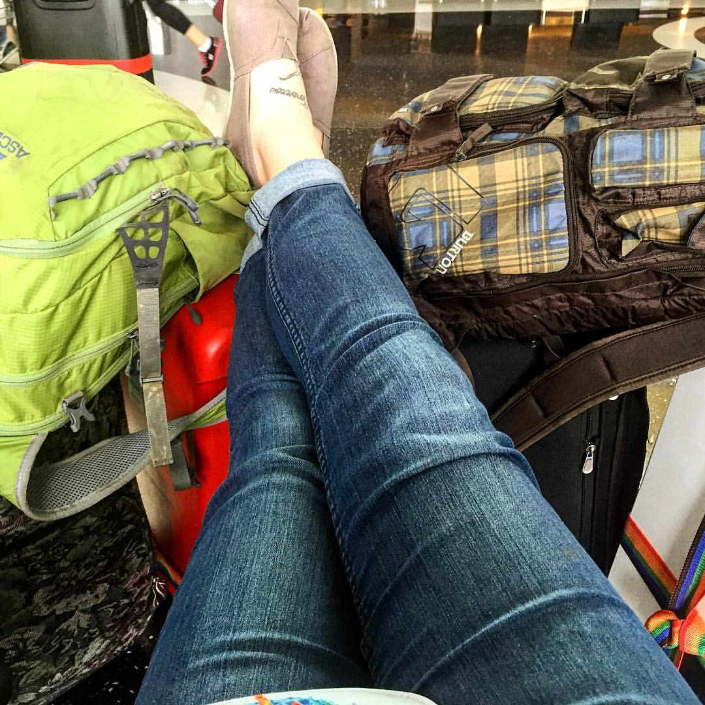
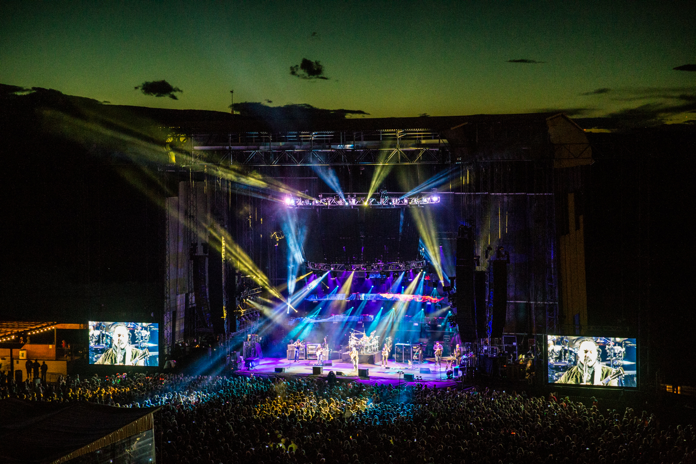
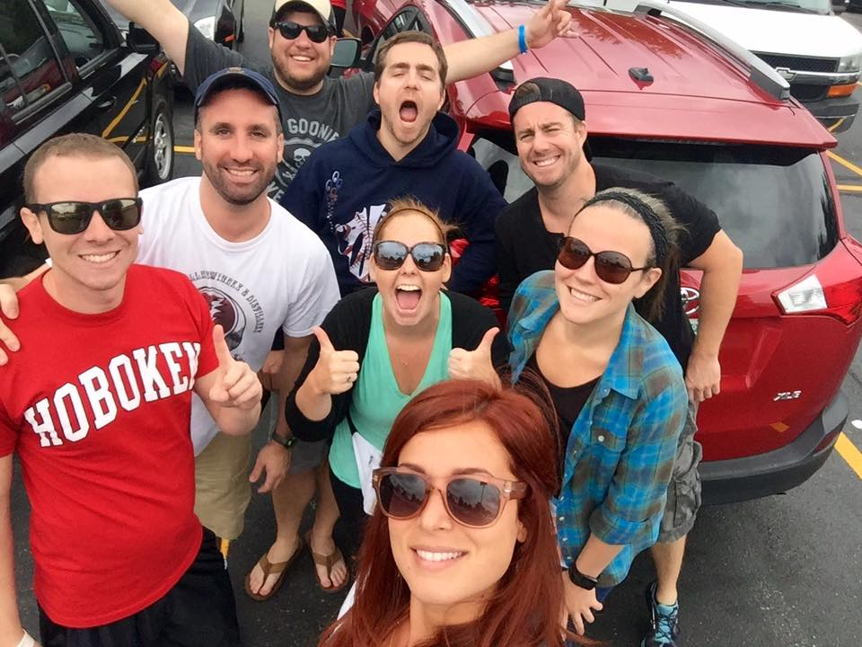

| Pack your bags, something small | This is Heaven's Amphitheater | It's by your side I make my home |
|---|---|---|
It was a trip a decade in the making. Ten. Full. Years. Our first group concert adventure was back in 2006, although some of us had been going to these shows and experiencing the magic as far back as 1996. Each summer that came and went, a renewed sense of adventure and determination would collectively swell within us. "Groge 2016 or bust!" was the one that finally caught. From Newark, NJ to Seattle, WA to our final destination of the Gorge Amphitheatre, we were in for the adventure of a lifetime. |
Each Labor Day Weekend over the last 20 years, the Dave Matthews Band calls the Gorge Amphitheater its home. The journey and accompanying experience has been called the "Mecca" for fans of the Band - a right of passage. More than 60,000 people travel from all corners of the world to set up camp on the outskirts of the Columbia River, carefully choosing a campsite with the most sprawling views of the Gorge itself. |
The excitement over a summer tour begins in February when dates are released and planning begins. Who can go to Hartford, CT this year? Citi Field? Scranton, PA? Saratoga Springs? THE GORGE? Some of us are family by blood. Others are friends that have turned into family over the years. Whatever the case may be, we are lucky enough to be bonded together by a love of the music and the environment that defines the Dave Matthews Band. |
|  |  |  |